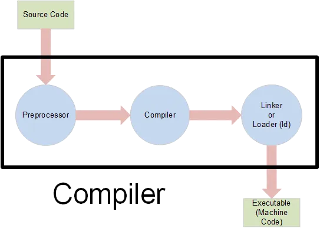
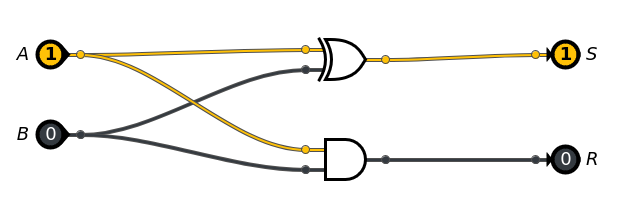
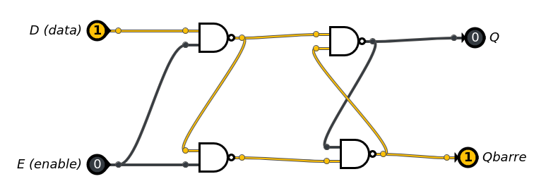

C2-ARCH-01 : Compilation : du Python au langage machine
Contents

C2-ARCH-01 : Compilation : du Python au langage machine#
Objectifs pédagogiques#
savoir nommer les différentes étapes pour passer d’un code source écrit par un humain à un code binaire compris par un micro-processeur
appliquer sur des codes sources Python au papier et avec un crayon
PROPOS LIMINAIRES#
Le monde des langages de programmation est vaste. La manière dont s’exécutent les programmes varient en fonction du langage.
Le langage Python n’est pas compilé directement en langage machine, il est interprété. Pour la suite de ce cours, nous supposerons qu’il est compilé comme le sont des langages comme C ou C++.
Compilation, kézako ?#
Lorsqu’on écrit un programme, on choisit un langage de programmation. Dans l’introduction de ce cours, nous avons vu qu’il en existait des centaines (voir des milliers) :
Python
Fortran
C
C++
etc..
La grande question est de comprendre comment on passe de :
a = 3
b = 4
c = a + b
print(c)
7
à une suite de 1 (du courant) et de 0 (pas de courant) compréhensible par l’électronique de l’ordinateur (la mémoire, le processeur et tous les autres composants) :
01101001 01101110 01110100 00100000
01101101 01100001 01101001 01101110
00101000 00101001 01111011 00001101
00001010 00100000 00100000 00100000
00100000 01110000 01110010 01101001
01101110 01110100 01100110 00101000
00100010 01001000 01100101 01101100
01101100 01101111 00100000 01010111
01101111 01110010 01101100 01100100
00100010 00101001 00111011 00001101
00001010 00100000 00100000 00100000
00100000 01110010 01100101 01110100
01110101 01110010 01101110 00100000
00110000 00111011 00001101 00001010
01111101
Ce processus est appelé compilation. Il est exécuté par un programme spécial appelé compilateur.

Observations#
Nous pouvons faire trois observations initiales.
L’ordinateur comprend une langue formée de 0 et de 1 : le langage machine#
Le langage machine est une suite de bits qui est interprété par le processeur. C’est le seul qu’il puisse traiter. Cette suite de bits est une représentation binaire d’une instruction de très bas niveau que le processeur comprend.
Les tous premiers ordinateurs construits dans les années 1940 étaient programmables uniquement en langage machine. C’est la raison pour laquelle on dit que le langage machine est un langage de programmation de première génération (ou L1G).
Aujourd’hui, il est impossible de programmer en langage machine : les instructions des processeurs modernes sont beaucoup trop nombreuses et complexes pour être programmées à la main.
L’utilisateur (le programmeur) comprend une autre langue : le langage de programmation#
Un langage de programmation tel que Python est compréhensible par un humain. Il est assez éloigné de l’électronique du processeur. On le dit de troisième génération (ou L3G) ou de haut niveau.
Un programme écrit dans un langage de programmation de haut niveau est indépendant du processeur. Il peut aussi bien être exécuté sur une architecture Intel x86 qu’une architecture ARM par exemple.
Un compilateur permet de traduire un langage L3G vers L1G#
Le compilateur est un traducteur. Le processus de compilation est une traduction d’un langage de haut niveau L3G de haut niveau vers un langage de bas niveau (machine) L1G.
Si on a deux ordinateurs avec des processeurs différents Processeur_A et Processeur_B, alors le résultat de cette traduction sera différente selon que l’on traduit pour l’un ou pour l’autre processeur. Ce qui fait la différence entre les deux processeurs est le jeu d’instructions (en anglais instruction set) qu’il est capable d’exécuter.
Analogie : traduire du français vers l’anglais#
Pour comprendre les différentes phases de la compilation, on peut faire une analogie avec la traduction d’une phrase écrite en français vers la langue anglaise.
Imaginons que nous souhaitions traduire la phrase suivante :
Pour vous rendre à Milan depuis Lausanne, vous devez aller jusqu’à Martigny, puis par le col du Grand Saint-Bernard à Aoste et enfin l’autoroute A26 depuis Ivrea.
Quelles sont les étapes que vous allez suivre ?
Reconnaître les lettres
Reconnaître les mots
Reconnaître le sens des phrases
Reconnaître les lettres#
Si la phrase est écrite ainsi :
ローザンヌからミラノに行くには、まずマルティニーへ行き、次にグレートセントベルナール峠をアオスタへと抜け、最後にイヴレアからA26号線を通る必要があります。
il est possible de déduire que la phrase
n’est pas écrite dans une langue basée sur un alphabet latin moderne.
On appelle cette étape l’analyse lexicale : de quoi sont faits les mots qui composent la phrase ?
Reconnaître les mots#
Si la phrase avait été écrite ainsi :
For å komme deg til Milano fra Lausanne, må du dra til Martigny, deretter gjennom St. Bernhardspasset til Aosta, og til slutt ta motorvei A26 fra Ivrea.
il est possible de déduire que la phrase :
est écrite dans une langue basée sur l’alphabet latin moderne
que les mots ne semblent pas écrits dans une langue enseignée au gymnase (français, allemand, italien, anglais, espagnol, latin, grec)
On appelle cette étape l’analyse syntaxique : les mots composés par des lettres sont ils justes dans la phrase ?
Reconnaître le sens des phrases#
Si la phrase est écrite ainsi :
Pour vous aller à Ivrea par Lausanne, vous devez aller A26 enfin Martigny, puis autoroute le Grand du col Saint-Bernard enfin Aoste et à A26 depuis Milan.
il est possible de déduire que la phrase :
est écrite dans une langue basée sur l’alphabet latin moderne
que les mots sont écrits en français
qu’il n’y a pas de sens dans la phrase
On appelle cette étape l’analyse sémantique : les mots mis ensembles donnent-ils un sens à la phrase ?
Version British English#
Voici une version en British English
To get to Milan from Lausanne, you need to go to Martigny, then through the Great St. Bernard Pass to Aosta, and finally take the A26 motorway from Ivrea.
Il existe des locuteurs qui écrivent et comprennent la phrase avec des mots comme to go et motorway
Version American English#
Voici une version en American English
To get to Milan from Lausanne, you need to drive to Martigny, then through the Great St. Bernard Pass to Aosta, and finally take the A26 highway from Ivrea.
Il existe des locuteurs qui écrivent et comprennent la phrase avec des mots comme to drive et highway
Version Australian English#
Voici une version en Australian English
To get to Milan from Lausanne, you need to head to Martigny, then through the Great St. Bernard Pass to Aosta, and finally take the A26 motorway from Ivrea.
Il existe des locuteurs qui écrivent et comprennent la phrase avec des mots comme to head et motorway
Les trois versions sont correctes, mais pour un locuteur différent !
Etapes de compilation#
Les trois étapes du passage d’un langage L3G à L1G sont identiques !
Analyse lexicale
Analyse syntaxique
Analyse sémantique
Les intructions logiques du processeur#
Les instructions du processeurs sont des opérations qui sont codées sous la forme de circuits logiques.
Un exemple : demi-additionneur#
Un demi-additionneur à deux bits permet de calculer la somme de deux bits sans tenir compte de la retenue (\(1_2 + 1_2 = 10_2\) donc il faudrait un troisième bit pour le coder).
Le demi-additionneur se construit en un circuit logique dont la table de vérité est :
\(A\) |
\(B\) |
\(R\) |
\(S\) |
|---|---|---|---|
0 |
0 |
0 |
0 |
0 |
1 |
0 |
1 |
1 |
0 |
0 |
1 |
1 |
1 |
0 |
0 |
où \(A\) et \(B\) sont les bits d’entrée, \(R\) la retenue et \(S\) le résultat de la somme (attention en binaire !!)
se construit avec deux portes logiques XOR et AND :

Un second exemple : une mémoire de 1 bit#
On observe dans le circuit du demi-additionneur que l’on ne peut pas conserver la valeur des deux opérandes (les deux bits). On a donc besoin d’une mémoire.
Une mémoire (ou bascule D ou D latch en anglais) est un dispositif permettant de conserver la valeur d’un bit d’entrée (\(D\)) même si l’on fait ensuite varier les entrées pour autant qu’un loquet \(E\) soit vrai. C’est une mémoire ou registre dans le cas des processeurs.
La table est la suivante :
\(E\) |
\(D\) |
\(Q\) |
\(\bar{Q}\) |
remarque |
|---|---|---|---|---|
0 |
0 |
\(q_{prev}\) |
\(\bar{q}_{prev}\) |
pas de changement |
0 |
1 |
\(q_{prev}\) |
\(\bar{q}_{prev}\) |
pas de changement |
1 |
0 |
0 |
1 |
Reset |
1 |
1 |
1 |
0 |
Set |
lorsque \(E = 0\) (Disabled), la sortie \(Q\) et \(\bar{Q}\) conservent son leur état quelque soit la valeur de \(D\)
lorsque \(E = 1\) (Enabled), la sortie \(Q\) recopie l’état de l’entrée \(D\)
et on peut la construire avec deux portes logiques NOR (au-dessus) ou avec une bascule flip-flap (au-dessous):

Ensemble des instructions d’un processeur#
L’ensemble des instructions d’un processeur (en anglais instruction set) est l’ensemble des instructions codées dans un processeur à l’aide de portes logiques.
Besoin d’un langage NOT L3G AND NOT L1G L2G : l’assembleur#
On pourrait programmer complètement un processeur à l’aide des instructions codées en binaire comme les héroïques ancêtres des années 1940 et 1950, mais disposer d’un langage de programmation aussi proche de l’électronique mais humainement lisisble. En quelque sorte, c’est un langage intermédiaire entre le langage L3G de haut niveau et le langage machine binaire.
C’est le langage ASSEMBLEUR.
On dit qu’il est un langage de deuxième génération (ou L2G).
Instruction addition du processeur en assembleur#
On a vu qu’on peut construire un circuit logique pour additionner deux bits. Les entrées de l’additionneur sont les deux bits. On dit qu’ils sont stockés en mémoire. La mémoire du processeur s’appelle registre.
En mettant plusieurs demi-additionneurs en série, on peut calculer la somme de deux nombre de plusieurs bits.
Appelons cette instruction ADD. Cette instruction a besoin de deux arguments : les adresses où se trouvent les deux nombres à additionner (un registre ou une adresse mémoire). Appelons les dest et source où :
destest la valeur du premier opérande stocké à l’emplacementdestsourceest la valeur du second opérande stocké à l’emplacementsource
Notre première instruction s’écrit donc :
ADD dest source
Le résultat se trouvera stocké dans l’emplacement mémoire du premier opérande : dest et donc, la valeur initiale stockée dans dest aura disparu (elle a été écrasée par la somme). Il y a donc un besoin de comprendre comment transférer une donnée d’un emplacement à un autre.
instruction pour transférer une valeur d’un emplacement à l’autre#
Il est possible de construire une mémoire (bascule D) pour l’état d’un seul bit. Il est tout à fait possible d’en placer plusieurs en parallèle pour conserver en mémoire l’état d’un octet (ou même de plusieurs octets).
Appelons l’instruction permettant de transférer une valeur vers une mémoire ou un registre : MOV. Cette instruction a besoin de deux arguments : la destination et la source
destest la destination (un registre :R1ou une adresse en mémoire :@addr)sourceest l’endroit d’où la valeur sera lue (un registre :R1ou une adresse en mémoire :@addr)
L’instruction devient donc :
MOV dest source
Design du processeur VK 1020#
On peut maintenant imaginer designer un processeur extrêmement simple. Il contiendra 5 instructions :
A chaque instruction on associe un code binaire unique : l’Opcode (Operation code). C’est ce code binaire qui est lu par le processeur. Le processeur ensuite décode la valeur binaire pour diriger le calcul vers les circuits logiques correspondants.
Pour 5 instructions, il sera nécessaire de coder sur 3 bits (\(5 < 2^3\))
instruction |
Opérande 1 |
Opérande 2 |
Remarque |
Opcode |
|---|---|---|---|---|
|
|
|
Addition de |
\(0 0 0\) |
|
|
|
Soustraction de |
\(0 0 1\) |
|
|
|
Chargement dans |
\(0 1 0\) |
|
|
Saut conditionnel à la position stockée dans |
\(0 1 1\) |
|
|
Arrêt de l’exécution |
\(1 0 0\) |
Les capacités du processeur VK 1020 se résument donc à additionner et soustraire. Il est en outre capable de coder des tests conditionnels.
En outre, le processeur VK 1020 aura besoin d’un certain nombre de registres, c’est-à-dire des mémoires les plus proches des circuits logiques et arithmétiques.
Il en existe 4 :
R0R1R2R3
Finalement, le processeur VK 1020 est connecté à une mémoire haute suffisamment grande, accessible par son adresse.
Compilons !#
Admettons que nous n’avons pas de compilateur de Python vers l’architecture VK 1020. Il nous faut donc “compiler” à la main. Par simplification, nous passerons par l’assembleur du processeur VK 1020.
Le code à “compiler” (traduire) est donc le suivant :
a = 3
b = 4
c = a + b
print(c)
7
La première ligne est :
a = 3
il s’agit donc de charger la valeur 3 dans un registre :
MOV R0 3
La seconde ligne est :
b = 4
il s’agit de charger la valeur 4 dans un (autre) registre :
MOV R1 4
La troisième ligne est :
c = a + b
Dans un premier temps, on va transférer la valeur de R0 dans R2 et la valeur de R1 dans R3 :
MOV R2 R0
MOV R3 R1
La raison est qu’on souhaite conserver les valeurs de a et b une fois l’addition faite. Il est ensuite possible d’additionner les deux opérandes :
ADD R2 R3
Finalement la fonction de sortie print() n’est pas implémentable avec le set d’instructions du VK 1020. Il faut terminer le code par :
HALT
Le code complet en assembleur VK 1020 est donc le suivant :
MOV R0 3
MOV R1 4
MOV R2 R0
MOV R3 R1
ADD R2 R3
HALT
Le résultat final se trouve stocké dans R2
De l’assembleur au langage machine#
On sait comment coder l’instruction du VK 1020 en utilisant l’Opcode. Il ne manque plus qu’à savoir traduire les arguments du MOV ou du ADD puisqu’ils sont de nature différentes : un registre ou une valeur.
Admettons que les arguments sont codés sur 8 bits (un octet). On admet encore que le *bit de poids le plus fort indique s’il s’agit d’un registre ou d’une valeur :
10000000indique qu’il s’agit d’un registre (ici le registreR0)00000000indique qu’il s’agit d’une valeur (ici la valeur0)
On peut donc donner le code en langage machine L1G complet (avec commentaire) :
010 10000000 00000011 # MOV R0 3
010 10000001 00000100 # MOV R1 4
010 10000010 10000000 # MOV R2 R0
010 10000011 10000001 # MOV R3 R1
000 10000010 10000011 # ADD R2 R3
100 # HALT
Et donc sans commentaires :
010 10000000 00000011
010 10000001 00000100
010 10000010 10000000
010 10000011 10000001
000 10000010 10000011
100
Exercice 1#
Ecrivez le programme Python suivant en langage machine sur l’architecture VK 1020 :
m = 10
n = 3
a = m - n
Exercice 2#
Ajoutez l’instruction (ets son Opcode) à l’architecture VK 1020 ayant les caractéristiques suivantes :
MUL dest source
qui permet de multiplier la valeur stockée en dest avec la valeur stockée en source. Le résultat est stocké en dest et la valeur précédente est perdue
Exercice 3#
Avec le nouveau instruction set étendu du VK 1020, écrivez le code assembleur et le code en langage machine du code Python suivant :
a = 3
b = 5
c = a * b
a = b - c